Student project — University of Washington, COMMLD 560. Not an Amazon product or study.
Reader Discovery · survey appendix
How do you find books worth reading?
The complete visualized results behind the numbers quoted in the Reader Discovery case study.
Method. A six-section reader survey fielded July–August 2026; n = 42 responses through August 4. Recruitment was a convenience sample in two waves — the team's own networks, then a family re-share that skewed 55+ — so age and recruitment channel are confounded throughout. We report counts, not percentages; sub-questions have smaller ns where respondents skipped them, and each chart states its own.
The results the presentation cites
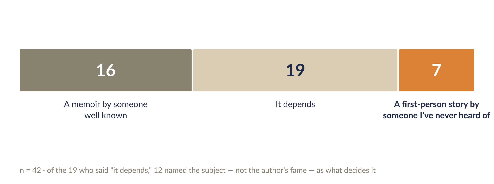
The forced-choice question behind "our own data killed our first hypothesis." "It depends" was a literal answer option.
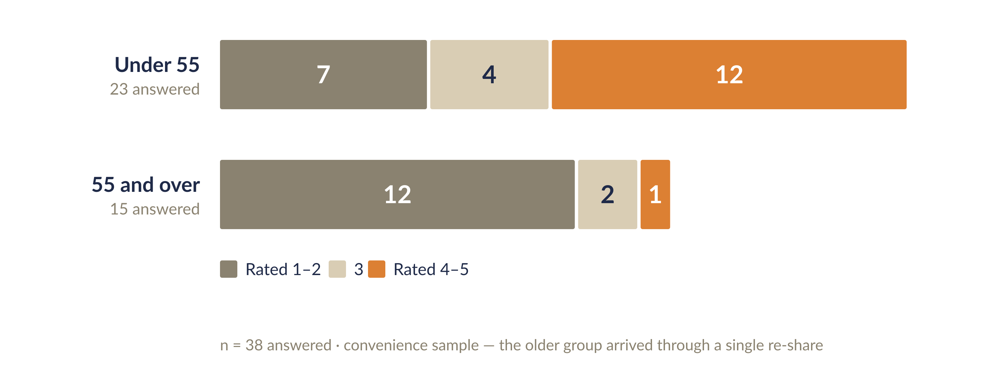
The age split on reaching the author. Read with the confound above — the 55+ group arrived almost entirely through a single re-share.
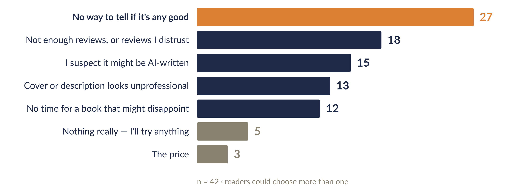
Hesitations about an unknown author. Quality uncertainty beat everything, including price.
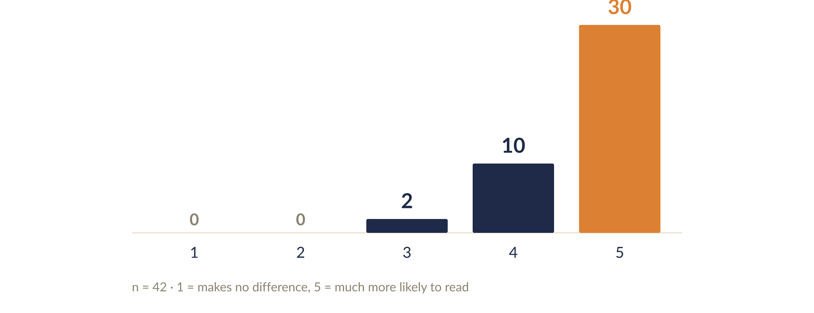
The strongest signal we measured: how much human authorship matters.
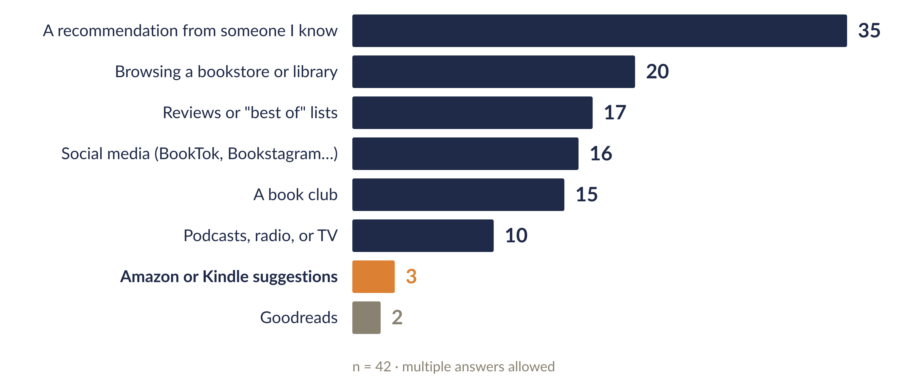
How respondents currently find books.
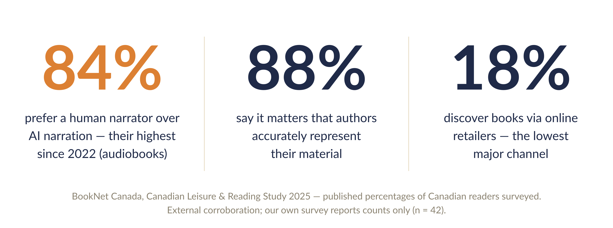
External corroboration — BookNet Canada's 2025 consumer study, charted from their published figures. Not our data; included because it points the same direction as ours.
Everything else we asked
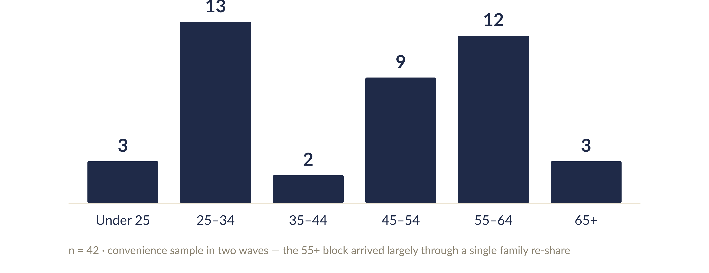
Who answered. The two-wave recruitment shows up here directly.
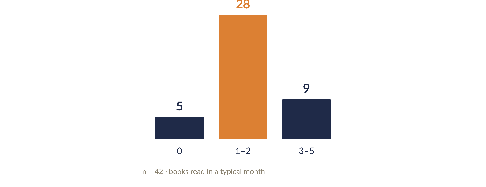
Books per month. Mostly light readers — the audience a trust signal has to work for.
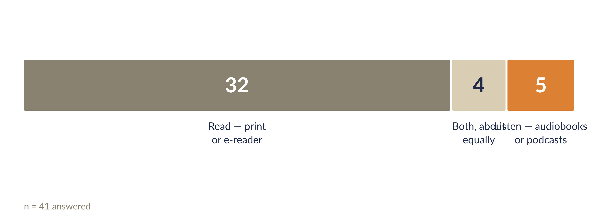
Read, listen, or both.
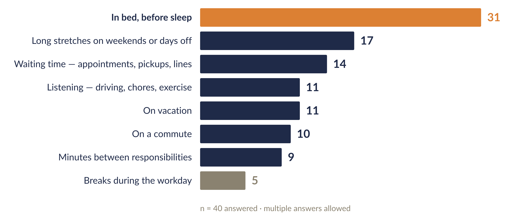
When reading actually happens.
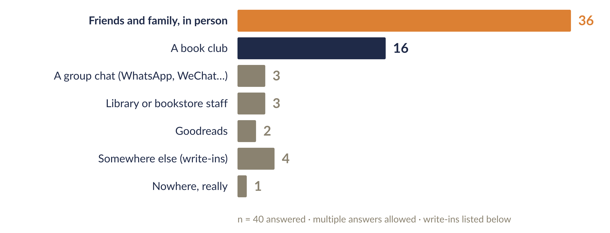
Where books get talked about. Write-ins: Discord, Reddit, office peers, and "changeroom after tennis!"
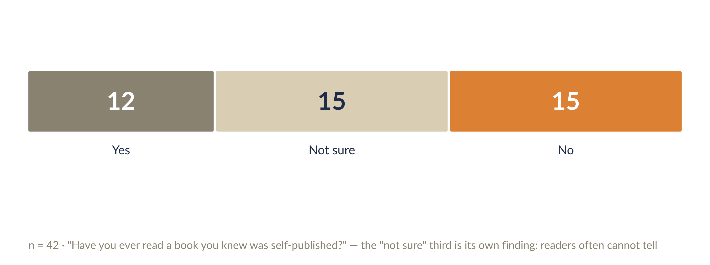
The "not sure" third is its own finding — readers often can't tell what's self-published.
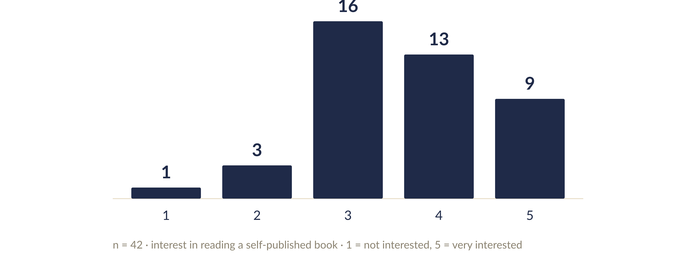
Interest in reading a self-published lived-experience book.
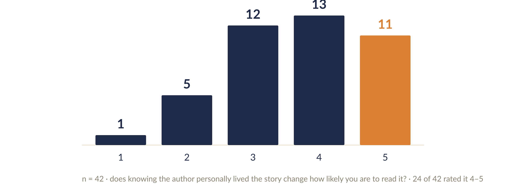
The lived-experience signal on its own: 24 of 42 rated it 4–5.
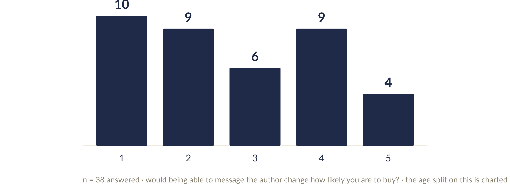
Author contact as a buy reason, unsplit — the aggregate behind the age-split chart above. Lukewarm as acquisition; the open-text answers were what pointed to retention.
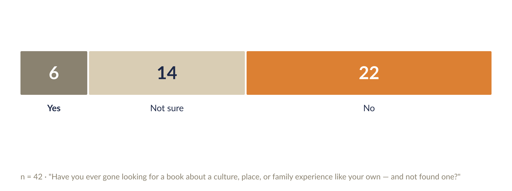
The representation-gap question. Six said yes.
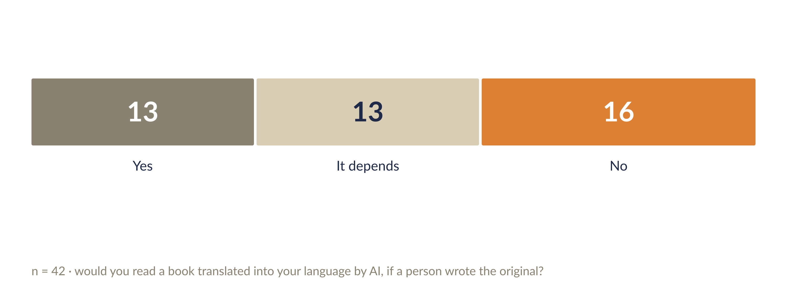
AI translation of a human-written original — the one AI question the room split on.